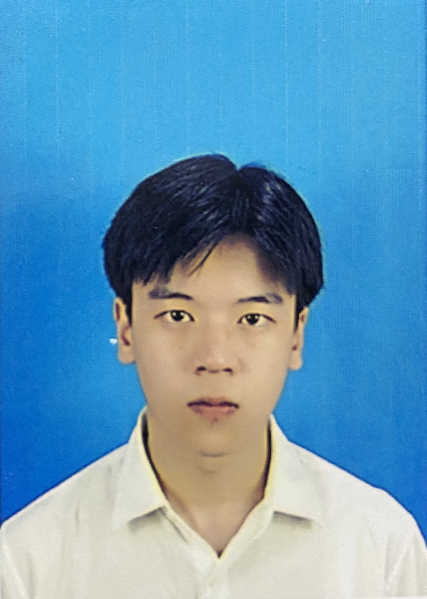

Educational background
Personal Photo
Advanced Diploma in computer
Ningbo City colleague 09/2020-06/2023
Advanced Diploma in computer
My favorite course is Advanced English because I think there are many benefits to learning English. For example, improving memory, strengthening communication skills, helping me learn computer coding courses, and better employment prospects.
I like listening to music because it makes me feel relaxed and happy. I also listen to music a lot while working and studying, which helps me focus and be more productive. My favourite band is the UK's Passenger.